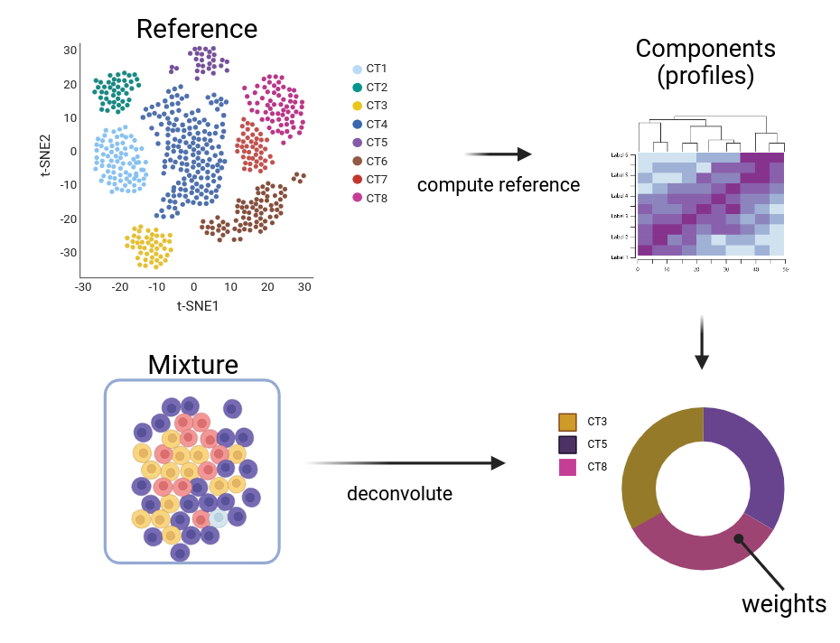
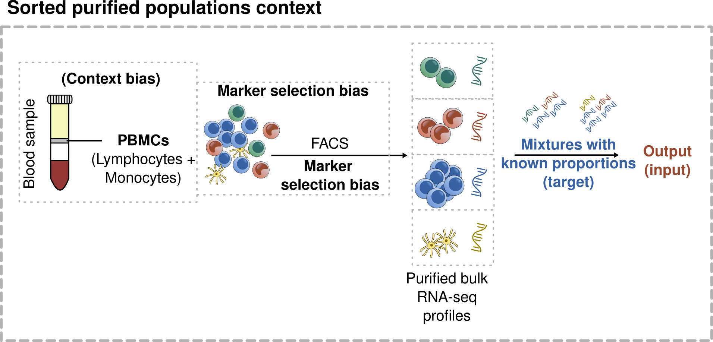
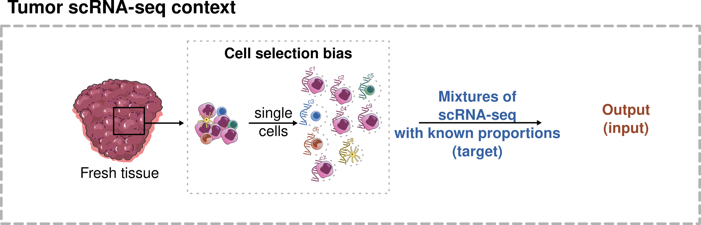
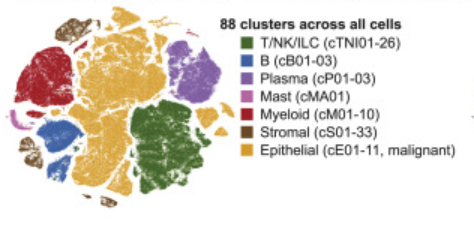
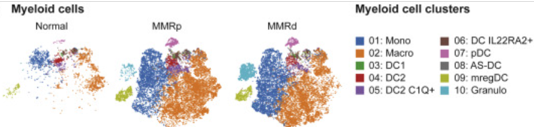
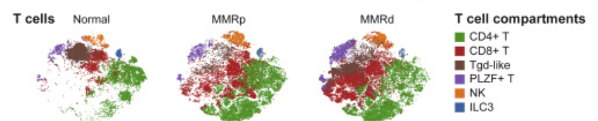
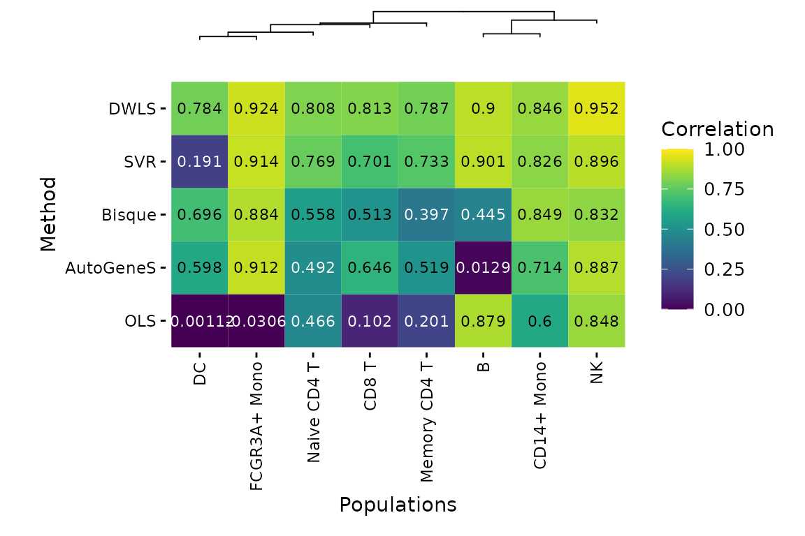
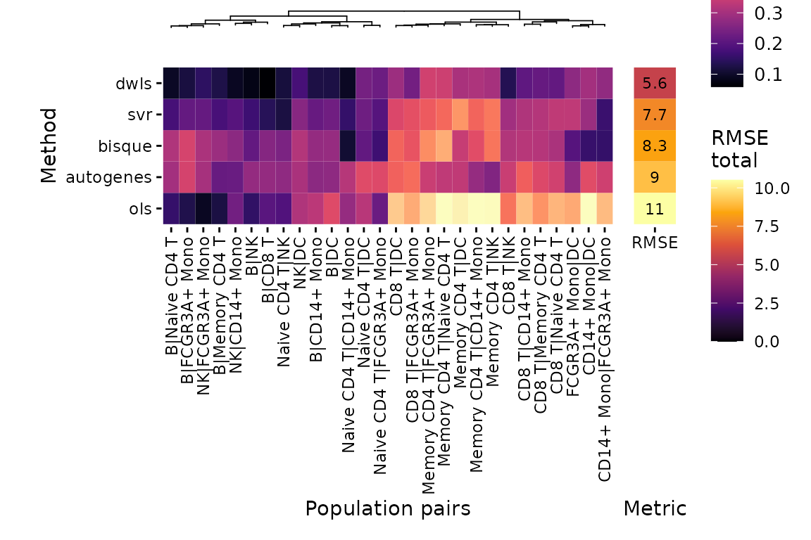
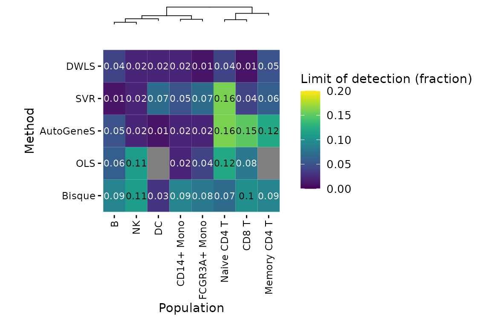

The goal of deconvolution is to predict the makeup of a mixture in terms of its components and their fractions. i.e. if:
. . .
Mixture: bulk RNA-seq profiles (bulk, spot on a 10X Visium)
Components: cell type profiles (C)
then \(mixture = \sum_{i=1}^{n} C_iw_i\) subject to: \(\sum_{i=1}^n w_i = 1\) and \(w_i \geq 0\)
Deconvolution graphical summary

Why is it useful?
Goal: define the cell types and their proportions present in a sample
Identify and understand tissue heterogeneity
Associate cell types with clinical variables (e.g. survival, response to therapy)
Apply to downstream analysis: e.g. cell-to-cell communication
Challenges of deconvolution
If \(mixture = \sum_{i=1}^{n} C_iw_i\), subject to: \(\sum_{i=1}^n w_i = 1\) and \(w_i \geq 0\)
For the user:
What are the cell types present and how many are there?
What is a good reference for my mixture?
For the method:
Assumption: all cell types that could be present are represented in the reference
How do I identify the cell type profiles (C)? In what space?
How do I measure if I have a good fit?
TME deconvolution: first generation
First generation deconvolution methods generally used FACS-sorted gene expression as cell type profiles, often from PBMCs. References are almost always pre-computed.
. . .

TME deconvolution: examples of first generation methods
CIBERSORT (support vector regression)
MCPcounter (marker mean expression)
xCell (corrected ssgsea)
EPIC and quanTiSeq (constrained least square minimization)
Some methods don’t do deconvolution per se (don’t return proportions): inter-sample comparisons only
Methods don’t assume a complete reference: only deconvolute cell types of the TME
Cell type deconvolution: second-generation
(User-provided) single-cell reference of the same context as the sample to be deconvoluted
. . .

The single cell reference: atlases
Tabula Muris
Tabula Sapiens
Human Lung Atlas
Multiple published single-cell atlases of different tissues or pathologies
. . .
Major problem: cell-type annotation
Example: Colon Atlas (Pelka et al., 2021)
Coarse-grained annotation

. . .
Fine-grained annotation of compartments

Cell type resolution: can we separate them?

Deconvolution methods are often robust when using coarse-grained annotation
Deconvolution often fails at separating cell types defined by ‘state’ (e.g. T CD4+/CD8+, B-naive from B-mature)
What is the appropriate “level” of annotation that allows for deconvolution?
deconverse: a meta-method package with benchmarking built-in
deconverse benchmarking results: compare between populations
plt_cor_heatmap(pbmc_bench, level ="l2")$heatmap

deconverse benchmarking results: spillover
plt_spillover_heatmap(pbmc_bench)$heatmap

deconverse benchmarking results: limit of detection
plt_lod_heatmap(pbmc_bench)$heatmap

Some details: Deconvolution methods in deconverse
Ordinary Least Squares (OLS), Support Vector (SVR) and Dampened Weighted Least Squares Regressions use the same reference cell marker matrix from Seurat::findMarkers
CIBERSORTx runs in a docker
MuSiC and DWLS were reimplemented for performance
(Python) Reticulate methods: AutoGeneS and scaden
Spatial deconvolution methods to be added to deconverse 0.3